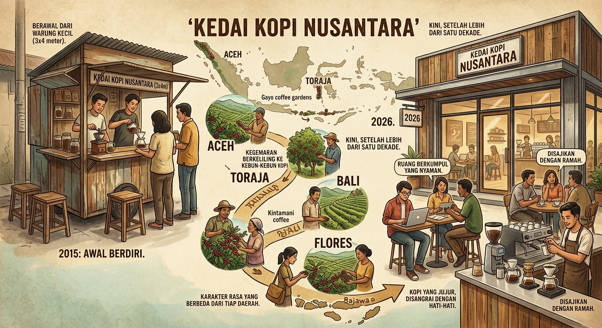
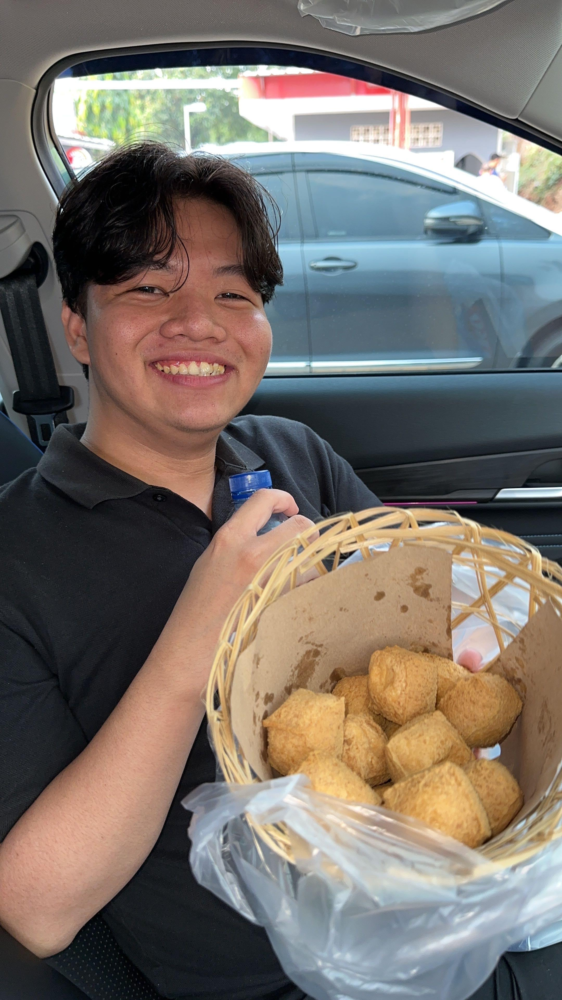

Visi
Menjadi kedai kopi rumahan yang memperkenalkan kekayaan biji kopi Nusantara kepada lebih banyak orang, sekaligus menjadi ruang ketiga yang hangat bagi masyarakat sekitar.
Perjalanan Kedai Kopi Nusantara, dari kecintaan pada kopi daerah hingga menjadi tempat singgah favorit.
Kedai Kopi Nusantara dimulai pada tahun 2015 dari sebuah warung kecil berukuran 3x4 meter. Berawal dari kegemaran berkeliling ke kebun-kebun kopi di Aceh, Toraja, Bali, hingga Flores, kami ingin lebih banyak orang mencicipi karakter rasa yang berbeda dari tiap daerah tersebut tanpa harus bepergian jauh.
Kini, setelah lebih dari satu dekade, kedai kami berkembang menjadi ruang berkumpul yang nyaman bagi pekerja lepas, mahasiswa, dan pecinta kopi — tanpa meninggalkan nilai awal kami: kopi yang jujur, disangrai dengan hati-hati, dan disajikan dengan ramah.

Menjadi kedai kopi rumahan yang memperkenalkan kekayaan biji kopi Nusantara kepada lebih banyak orang, sekaligus menjadi ruang ketiga yang hangat bagi masyarakat sekitar.
Orang-orang yang membangun cafe ini.
Founder
"Menjadi yang terbaik adalah hal yang paling berarti meski dari yang terburuk. - Kepin2090".

Chief Executive Officer/CEO
"Berusahalah sampai kamu tau bahwa usaha tidak akan mengkhianati hasil - Yovan2030"
Manager
"kesuksesan adalah sebuah pencapaian yang semua orang mau capai - Richie2028" .